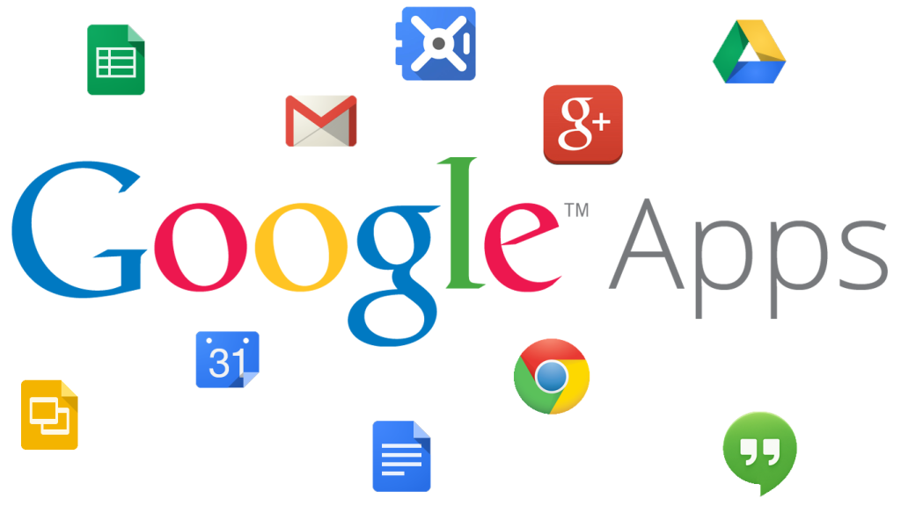

UT5. APLICACIONES DE OFIMÁTICA WEB
¶
FICHA TÉCNICA DE LA UNIDAD ¶
| Resultados de Aprendizaje (RA) | RA4 |
| Criterios de Evaluación (CE) | RA4: a, b, c, d, e |
| Tiempo | Total: 5 horas (Teoría: 1 h / Práctica: 4 h) |
¶
ÍNDICE DE CONTENIDOS ¶
1. INTRODUCCIÓN Y CONTEXTUALIZACIÓN
10. Trabajar con aplicaciones de ofimática web.
11. Mantenimiento y administración de una aplicación ofimática web.
1. Introducción y contextualización ¶
Si alguna vez necesitas utilizar una aplicación ofimática y, por la razón que sea, no tienes instalada en el equipo que estás usando la aplicación ofimática que quieres usar, podrás acceder a Internet y utilizar una aplicación ofimática web.

Como sabes, una aplicación ofimática es un software destinado a realizar tareas relacionadas con el entorno administrativo y de gestión, por lo tanto una aplicación ofimática web es una aplicación web destinada a su utilización en el entorno de oficina.
En esta unidad verás qué es una aplicación ofimática web, cuáles son las más usuales, en qué paquetes se agrupan y cómo instalarlas, cómo configurarlas, cómo utilizarlas y cómo mantenerlas.
El uso de aplicaciones ofimáticas web está cada vez más extendido. El motivo principal es que estas aplicaciones permiten la colaboración.
Ya no dependerás de una aplicación ofimática instalada en tu equipo, podrás editar tus documentos únicamente con la condición de tener una conexión a Internet y un navegador web.
Podrás crear documentos, e incluso otros usuarios podrán acceder a los mismos documentos desde otros equipos.
2. Utilidad ¶
Podrás comprobar que una suite ofimática online incluye diferentes aplicaciones ofimáticas como pueden ser procesadores de textos, hojas de cálculo, gestores de presentaciones, planificadores de tareas, etc.
Si quieres utilizar una suite ofimática on-line únicamente tendrás que acceder a la página web de la suite y registrarte creando una cuenta de usuario.
En principio no tendrás que descargar, ni instalar ninguna aplicación de escritorio para el uso de estas suites ofimáticas web.
En las suites ofimáticas on-line podrás comprobar que su uso vía web hace que sean independientes del sistema operativo que tengas instalado en tu equipo.
Tienes que saber que algunas de estas suites son gratuitas por completo, sin embargo, otras son totalmente de pago. Hay algunas suites que tienen una serie de aplicaciones gratuitas, pero para acceder por completo a la suite deberás suscribirte pagando una determinada cantidad.
Podrás ver que las suites ofimáticas web permiten el trabajo colaborativo en los documentos, la publicación de esos documentos en Internet y una gran integración con el correo electrónico.
El término Web 2.0 está asociado con aplicaciones web que facilitan el compartir información, la interoperabilidad, el diseño centrado en el usuario y la colaboración en la World Wide Web, como es el caso de las aplicaciones web que estás viendo.
3. Ventajas e inconvenientes ¶
Al utilizar las suites ofimáticas web encontrarás tanto ventajas como inconvenientes, a continuación se enumeran algunas de las ventajas con las que podrás contar, así como, los inconvenientes con los que tendrás que trabajar.
Ventajas:
-
Tendrás acceso on-line a los documentos, podrás acceder a ellos desde cualquier ordenador con conexión a Internet. Ya no tendrás que copiar y transferir ficheros, de forma que no tendrás que llevar tu memoria USB a todos los lados. -
Las suites ofimáticas web no requieren instalación, por lo que podrás olvidarte de descargas e instalaciones.
-
Favorecen el trabajo colaborativo, podréis incluso trabajar varias personas sobre el mismo documento.
-
Mediante los sistemas de permisos podrás decidir quién puede o no acceder al documento y si puede leerlo, modificarlo, etc.
-
Reducción de costes. Verás que hay suites gratuitas por completo, así como suites gratuitas que tienen versiones más sofisticadas por un pago mensual.
-
Integración de aplicaciones en una única suite. Comprobarás que todas las aplicaciones están integradas dentro de una misma plataforma y con el máximo de compatibilidad con los estándares del mercado.
Inconvenientes:
-
Si no tienes una conexión a Internet no puedes acceder a la suite ofimática web y, por lo tanto, no podrás acceder a los documentos.
-
Dependerás de factores como fallos en el suministro eléctrico, caídas de servidores y otros ajenos a tu voluntad que no te permitirán acceder a la información.
-
Debes asumir de momento que estas aplicaciones aún no han alcanzado en usabilidad a las aplicaciones ofimáticas tradicionales.
-
Las funciones de diseño y formateo de las que dispones en las aplicaciones ofimáticas tradicionales todavía no son tan buenas en las aplicaciones ofimáticas web.
4. El procesador de textos. ¶
Como ya sabes, desde que apareció la informática, el procesador de textos representa una alternativa moderna a la antigua máquina de escribir, siendo mucho más potente y versátil que ésta.
En el computador, la primera alternativa a la máquina de escribir fue el editor de textos, sencillo y sin muchas posibilidades de formateo del texto.
El editor de textos ha evolucionado con el tiempo en el procesador de textos, un programa informático que, desde cualquier ordenador, facilita la creación y edición de documentos escritos.
Con estos procesadores de texto tienes la posibilidad de modificarlos tantas veces como quieras, guardarlos en soporte electrónico y recuperarlos más adelante, de manera que si necesitas actualizarlo, lo puedes copiar desde del soporte, modificar lo necesario y copiarlo de nuevo al soporte.
Además, te permite añadir gráficos, dibujos, fotografías, resaltado de palabras, colores, etc., incluso corrigen la gramática y las faltas de ortografía.
Algunos de los procesadores de texto más conocidos, tanto históricos como actuales, son: Word (Microsoft), Works (Microsoft), WordPerfect (Corel), WordStar (SoftKey), Lotus Word Pro (Lotus) y Writer (Sun).
El último avance en los procesadores de textos ha sido la aparición de estas herramientas vía web. Los procesadores de textos web disponibles en las suites ofimáticas web más conocidas son: Word Web App (Office Web App), Zoho Writer (Zoho) y Google Writer (Google Docs).
5. La hoja de cálculo. ¶
Ya aprendiste que la hoja de cálculo es un software informático con el que podrás trabajar con números de forma sencilla e intuitiva. Para ello utiliza una rejilla donde en cada celda se pueden introducir datos de diferentes tipos: texto, numéricos y booleanos.
La hoja de cálculo basa su potencia en la realización de operaciones con esos datos.
Debes entender que el potencial que aporta esta herramienta es que te va a permitir realizar todos los cambios que necesites en las entradas objeto de estudio y obtener en el mismo instante el resultado final.
No será necesario que poseas unos amplios conocimientos matemáticos ya que será el ordenador el que efectúe las operaciones.
Y recuerda, la hoja de cálculo no sólo trabaja con números. Existen otros tipos de datos que puedes utilizar para operar con ellos.
Además, te permite obtener gráficos de diferentes tipos a partir de la información que hayas introducido, de forma que podrás ver diferentes presentaciones de la misma.
Algunas de las hojas de cálculo más conocidas, tanto históricas como actuales, son: Calc (OpenOffice.org), Excel (Microsoft Office), Gnumeric (Gnome Office), Lotus 1-2-3 (Lotus SmartSuite), Corel Quattro Pro (WordPerfect) y KSpread, (KOffice, paquete gratuito de Linux).
El último avance en las hojas de cálculo ha sido la aparición de estas herramientas vía web. Las hojas de cálculo
web disponibles en las suites ofimáticas web más conocidas son: Excel Web App (Office Web App), Zoho Sheet (Zoho) y Google Spreadsheets (Google Docs).
6. Aplicaciones de uso común. ¶
Otras aplicaciones de uso común que podrás encontrar dentro de las suites ofimáticas web son los gestores de presentaciones y las agendas electrónicas.
Una presentación es un conjunto de diapositivas, que agrupas en un archivo, con las que quieres mostrar una idea. En el archivo puedes incluir tus notas para la presentación.
Tradicionalmente se usaban diapositivas o filminas para su exposición mediante un retroproyector de transparencias, este aparato se sustituyó por los proyectores de vídeo, que se conectan al ordenador y mediante un gestor de presentaciones es posible mostrar tus presentaciones en la pantalla.
Algunos de los gestores de presentaciones más conocidos son: Impress (OpenOffice.org), PowerPoint (Microsoft Office) y Lotus Presentations (Lotus SmartSuite).
El último avance en los gestores de presentaciones ha sido la aparición de estas herramientas vía web. Los gestores de presentaciones web disponibles en las suites ofimáticas web más conocidas son: PowerPoint Web App (Office Web App), Zoho Show (Zoho) y Google Presentations (Google Docs).
La agenda electrónica te ofrece la posibilidad de llevar tu agenda con calendario, puedes apuntar las tareas que tienes que realizar, tanto si son puntuales, como si son periódicas y te permitirá escribir notas, que podrás ordenar según diferentes colores si es que las necesitas categorizar de alguna forma.
Algunas de las agendas electrónicas más conocidas son: Sunbird (Mozilla), Outlook (Microsoft Office) y Lotus Organizer (Lotus SmartSuite).
El último avance en las agendas electrónicas ha sido la aparición de estas herramientas vía web. Las agendas electrónicas web disponibles en las suites ofimáticas web más conocidas son: Outlook Web App (Office Web App),
Zoho Calendar (Zoho) y Google Calendar (Google Docs).
Las agendas electrónicas web te permitirán incluso compartir tu agenda con tus contactos.
7. Herramientas de Google. ¶
Las herramientas que te ofrece Google Docs son las siguientes:
-
Procesador de textos: Google Writer es un procesador de textos capaz de editar documentos constituidos por páginas de texto con formato: colores, alineaciones, listas, enlaces, imágenes, etc.
-
Hoja de cálculo: Google Spreadsheet es una hoja de cálculo que te permitirá realizar cálculos con números introducidos en una rejilla. Es útil para realizar desde simples sumas hasta cálculos complejos.
-
Gestor de presentaciones: Google Presentations es un gestor de presentaciones con el que podrás informar y captar la atención de los demás.
-
Editor de formularios: Google Forms es un editor de formularios con el que podrás crear tus propios cuestionarios y publicarlos en internet. Posteriormente, obtendrás los resultados obtenidos en Google Spreadsheet y podrás operar con ellos.
-
Editor de dibujos: Google Draw es un editor de dibujos con el que podrás crear dibujos y diagramas para insértalos en tus documentos, hojas de cálculo, presentaciones y páginas web.
-
Gestor de colecciones: Google Collections es un gestor de colecciones que te permitirá administrar tus documentos, ordenándolos por categorías.
Google te ofrece otras herramientas, también gratuitas, que te pueden ayudar en tu trabajo diario, como son:
-
Google: el propio buscador de Google.
-
Gmail: el correo electrónico web de Google.
-
Google Calendar: la agenda electrónica web de Google.
-
Google groups: una herramienta de Google donde podrás crear listas de distribución, así como unirte a otras.
-
Blogger: plataforma de Google que te permitirá crear tus propios blogs.
-
Google Dictionary: diccionario on-line de Google.
-
Google Translate: traductor on-line de Google.
-
Google Maps: servicio que ofrece mapas de ciudades de diversos países.
8. Instalación. ¶
Google Docs es una suite ofimática web y, como tal, no necesita de una instalación tradicional, aunque sí tendrás que tener en cuenta los requisitos iniciales para poder usarla.
Los requisitos que deberás cumplir para poder acceder a la utilización de las aplicaciones de ofimática web de Google Docs son los siguientes:
-
Ordenador con conexión a internet.
-
Un navegador web.
-
Una cuenta de usuario de Google.
Puedes trabajar con tus documentos sin tener conexión a Internet con la versión 'offline' de Google Docs.
Tendrás en todo momento una copia local de tus documentos, a los cuales podrás acceder a través de un icono en tu escritorio y sobre los cuales podrás trabajar en cualquier momento.
Mientras no exista conexión, los datos permanecerán en tu disco duro y te avisará de que los cambios no se encuentran todavía sincronizados.
9. Configuración. ¶
Si quieres cambiar la configuración de la cuenta de Google Docs, únicamente tendrás que hacer clic en el icono de la rueda dentada de la esquina superior derecha de la página de lista de documentos y, a continuación, hacer clic en Configuración de documentos, donde te aparecerán dos pestañas, General y Edición.
En la pestaña General, podrás cambiar las siguientes opciones de configuración:
-
Idioma: elegir un idioma.
-
Zona horaria: seleccionar la zona horaria que prefieras.
-
Donde se abren los elementos: si en una ventana nueva o en la actual.
-
Actualiza indicadores: si quieres o no marcar los elementos actualizados con negrita y los elementos no abiertos con un punto.
-
Almacenamiento: puedes aumentar el espacio de almacenamiento por un coste anual.
-
Editar tu perfil: podrás cambiar tu nick, el lugar donde vives y otras opciones de configuración.
-
Configurar la cuenta de Google: accederás a la configuración de tu cuenta de Google donde podrás modificar otro tipo de parámetros.
-
Altura de la fila: podrás mostrar o no más documentos en la lista de documentos.
-
En la pestaña Editar, podrás modificar los siguientes parámetros:
-
Controles de derecha a izquierda: te mostrará los controles de derecha a izquierda (para documentos escritos en hebreo o en árabe) en el editor.
-
Seguimiento de documentos: podrás utilizar Google Analytics para realizar el seguimiento del número de visitas que han recibido tus documentos publicados.
10. Trabajar con aplicaciones de ofimática web. ¶
En este apartado aprenderás y profundizarás en las funcionalidades de Google Docs, profundizarás en aspectos sobre cómo trabajar con el procesador de textos y cómo trabajar con la hoja de cálculo, también verás cómo trabajar con el resto de aplicaciones de uso común de la suite ofimática web Google Docs.
El procesador de textos.
Ya has visto en un apartado anterior qué es un procesador de textos web, aquí aprenderás a utilizarlo, en concreto el procesador de textos Google Writer, de la suite ofimática web Google Docs.
Son muy importantes las funcionalidades que ofrece Google Writer, pero también lo es la interfaz que presenta al usuario.
Podrás crear un nuevo documento de texto pulsando en el botón Crear y seleccionando del desplegable que aparece la opción Documento. Por el contrario si lo que quieres es editar uno ya existente, sólo tendrás que pulsar sobre él, en la lista de documentos que aparece en la pantalla principal de la suite ofimática web Google Docs.
Ya sabes que las funcionalidades de un procesador de textos web no son tan potentes como las de un procesador de textos tradicional, aún así podrás editar perfectamente tus documentos de texto con el procesador de textos web mediante las opciones de desplazamiento, selección, formato e inserción de elementos que te proporciona.
Si accedes a la interfaz de Google Writer podrás comprobar que la barra menús tiene opciones como en los procesadores de texto tradicionales, Archivo, Editar, Ver, Insertar, Formato, Herramientas, Tabla y Ayuda.
También verás que la barra de herramientas es muy parecida a la de un procesador de textos tradicional.
Los documentos que crees con la suite ofimática web Google Docs los podrás compartir con otras personas en Internet, profundizarás en esta cuestión en un apartado posterior que tratará sobre los permisos de los documentos.
La hoja de cálculo.
Ya has visto en un apartado anterior qué es una hoja de cálculo web, aquí aprenderás a utilizarla, en concreto la hoja de cálculo Google Spreadsheet, de la suite ofimática web Google Docs.
Son muy importantes las funcionalidades que ofrece Google Spreadsheet, pero también lo es la interfaz que presenta al usuario, por ser sencilla e intuitiva.
Podrás crear una nueva hoja de cálculo pulsando en el botón Crear y seleccionando del desplegable que aparece la opción Hoja de Cálculo. Por el contrario si lo que quieres es editar una ya existente, sólo tendrás que pulsar sobre ella, en la lista de documentos que aparece en la pantalla principal de la suite ofimática web Google Docs.
Ya sabes que las funcionalidades de una hoja de cálculo web no son tan potentes como las de una hoja de cálculo tradicional, aún así podrás editar perfectamente tus hojas de cálculo con la hoja de cálculo web mediante las opciones de desplazamiento, selección, formato, funciones, gráficos e inserción de elementos que te proporciona.
Si accedes a la interfaz de Google Spreadsheet podrás comprobar que la barra menús tiene opciones como en las hojas de cálculo tradicionales, Archivo, Editar, Ver, Insertar, Formato, Datos, Herramientas y Ayuda. También verás que la barra de herramientas es muy parecida a una hoja de cálculo de escritorio.
Desde el menú Archivo podrás incluso Importar datos desde ficheros externos como: xls, .xlsx, .ods, .csv, .txt, .tsv y .tab.
También podrás exportar los datos seleccionando en el menú Archivo la opción Descargar como, podrás exportar a formatos tales como: CSV, HTML, Texto, Excel, OpenOffice y PDf.
Otras aplicaciones de uso común.
En este apartado aprenderás a utilizar el resto de aplicaciones de uso común de la suite ofimática web Google Docs.
Con Google Presentations podrás crear, compartir y editar presentaciones on-line. Comprobarás que la interfaz que se presenta para esta aplicación ofimática web contiene también herramientas muy parecidas a las de un gestor de presentaciones tradicional.
Mediante Google Forms podrás crear, compartir y editar formularios on-line. La interfaz que presenta esta aplicación es sencilla e intuitiva, por lo que no te será difícil acostumbrarte a su manejo.
Con Google Draw podrás crear, compartir y editar dibujos on-line. Verás que la interfaz de esta aplicación web contiene también herramientas muy parecidas a las de un editor de dibujos tradicional.
Con Google Collections podrás organizar tus documentos en colecciones, que son una combinación de las mejores características de las etiquetas y carpetas. Un archivo puede tener varias colecciones.
11. Mantenimiento y administración de una aplicación ofimática web. ¶
En este apartado aprenderás y profundizarás en las acciones de administración de Google Docs, verás cómo gestionar los usuarios, como gestionar los permisos y cuáles son las políticas de seguridad que Google Docs utiliza en sus aplicaciones ofimáticas web.
Gestión de usuarios.
Podrás comprobar que la gestión de usuarios es muy sencilla en Google Docs para los usuarios y usuarias finales.
A efectos del trabajo colaborativo que es para lo que se utilizan los usuarios en Google Docs, sólo existen dos tipos de usuarios: el propietario de los documentos y las personas con las que el propietario comparte los documentos.
La forma de administrar los usuarios en Google Docs es sencilla: como propietario, tú serás el que decida con qué otras personas quieres compartir tus documentos de Google Docs, verás más adelante que también podrás determinar cómo los compartes mediante la asignación de permisos.
La administración de usuarios en Google Docs la puedes hacer a través de la carpeta contactos de tu cuenta de correo electrónico de Gmail.
Podrás compartir documentos escribiendo directamente la cuenta de correo electrónico de la persona con la quieres compartir, o podrás añadir personas desde la carpeta contactos de tu cuenta de Gmail para compartir los documentos.
Permisos.
Para facilitar el trabajo colaborativo, Google Docs te permite compartir los documentos, ya lo has visto en el apartado anterior, pero además, te permite asignar unos permisos a esos documentos para que los puedas compartir con determinados usuarios.
Los permisos que te permite asignar Google Docs son los siguientes:
-
Público en la web: Cualquiera con acceso a Internet puede acceder al documento.
-
Cualquiera con el link: Cualquiera que tenga el link puede acceder al documento.
-
Privado: Sólo personas con permisos explícitamente concedidos pueden acceder al documento.
En la interfaz de Google Docs, al lado del nombre del documento, te aparece un link con el permiso actual que tiene el documento. Y en la parte superior derecha aparece un desplegable denominado Compartir, si pulsas sobre ese desplegable podrás modificar el tipo de permiso otorgado al documento.
Si seleccionas Público en la web o Cualquiera con el link, Google Docs te dará la opción de seleccionar si quieres que las personas con las que compartas el documento lo puedan modificar, se denomina Acceso de edición.
Política de seguridad.
Puedes comprobar que Google Docs dispone de cinco principios de privacidad que describen la forma en que tratan la privacidad y la información de los usuarios y usuarias de sus productos:
1. Utilizan la información para ofrecer a sus usuarios productos y servicios.
2. Desarrollan productos que reflejan prácticas y estándares de privacidad firmes.
3. Recopilan información personal de forma transparente.
4. Ofrecen a las personas usuarias alternativas para proteger su privacidad.
5. Supervisan de forma responsable la información que almacenan.
El objetivo del centro de privacidad de Google es proporcionar información fácil de comprender sobre sus productos y sobre sus políticas para que las personas usuarias estén informadas a la hora de decidir los productos que quieren utilizar, la forma de utilizarlos y la información que desean facilitar a Google.
En la política de privacidad de Google encontrarás una descripción sobre la manera en que trata tu información cuando recurres a sus productos y servicios.